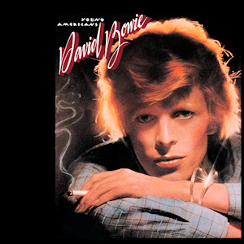
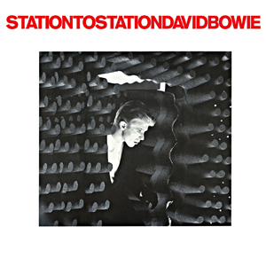
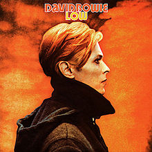
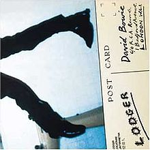

Bowie Remembered (Part Two): Philly Soul Enthusiast Moves to Berlin
It'd be an understatement to say that things really begin to take a turn for the interesting during this phase of Bowie's career, especially considering his vastly accomplished glam phase. But Bowie still had much to offer, and as time would prove, the beginning of his journey as a musical travelogue would lead to be his most critically-acclaimed period.
...
Young Americans (1975)
Writing about the Velvet Underground in 1969, the legendary Lester Bangs pondered “how do you define a group like this, who moved from Heroin to Jesus in two short- years?”
Clever wordplay and a smart observation undoubtedly, but Bowie’s transition from the Starman of 1972 to the “translucent white” Soulman of 1975’s Young Americans took the concept of musical evolution several steps further. When it works, it’s something quite remarkable; a distillation of Bowie’s love of Philadelphia soul, brought to life by a stellar cast of musicians including a youthful Luther Vandross and the man who would effectively replace Mick Ronson as Bowie’s go-to guitar superstar, Carlos Alomar.
Sure, it’s an uneven collection, but the peaks more than make up for plateaus. Fame, co-written with John Lennon and driven by a brilliant Alomar riff, became Bowie’s first US number one. Right, with its complex vocal arrangement, is perhaps Bowie’s finest vocal performance on the record. The sublime title track, however, towers above everything else here; a breathless, swaggering cocktail of soul, funk and rock, it’s a strong contender for Bowie’s best single of the mid-70s.
But soul wasn’t to be a new direction for Bowie; his restless creativity soon took him to pastures new, but he was smart enough to retain the talent that illuminated this bold and successful diversion into the sound of Young America. - David Coleman
Station to Station (1976)
Here’s where things start to get interesting. It’s where Bowie starts to go from quirky to downright weird. The soul element from the previous record is still present but you can already feel him starting to shake it off, and by the next record it would be buried under the haunted streets of Berlin. You can almost feel him challenging his own success, rebelling against it, or daring his audience to follow.
It’s the moment when he moves from pop star to artist, the thing he must have always wanted to be, with his intellectual strivings and eclectic influences, standing on the shoulders of Lennon and Reed, waiting to join the club. But it also represents another stride forward in that it contains his reading of "Wild is the Wind", which is where he finally drops his English archness to try out some good ol’ fashioned American sincerity; and he nails it. This newfound daring would reap further benefits in the trilogy to follow. - Alan Shulman
Low (1977)
With aid from Brian Eno, then a former member of Roxy Music and well-established as a solo performer, Low is a rather dichotomous collection of seemingly incomplete song ideas juxtaposed with expansive forays into ambient soundscapes and composition. While Bowie’s appreciation for Kraftwerk and Neu! resonates heavily throughout the album, Eno’s guidance is mostly heard on its instrumental, (or vocally minimal), flipside. The piece "Warszawa", in particular, belongs almost solely to Eno, its vocal Bowie’s true contribution.
In the age of first wave punk and art rock bands like Talking Heads and Wire, much of Low’s output fit well with the era, undercurrents of post-punk and mutant disco offered foundation within Bowie’s pop sensible perspective. In "Sound and Vision", Bowie ponders the correlation between the two and then concludes: “I will sit right down/Waiting for the gift of sound and vision.” Bowie’s then newfound understanding of how to proceed results in partial concepts and modern instrumentals, tracks like the funk lean of "Breaking Glass" and the heavily arranged "What in the World" impressive albeit short and fragmented, while "Art Decade" and "Weeping Wall" sound vast, patient, and exploratory. "Always Crashing in the Same Car" and "Be My Wife", however, stand as Low’s most considered offerings, both smartly issued as a two-sided single.
And while Low may lack cohesion, the album is replete with visionary concepts, ideas that would later inform decades’ worth of sound exploration and genre bending. The relatively upbeat and synthetically accented instrumental called "Speed of Life" makes bold introduction to what Low has to offer, a point at which the need to escape an unsustainable existence becomes reason enough to look ahead and welcome the future. - Sean Caldwell
"Heroes" (1977)
“Heroes” was Bowie’s penultimate entry into his Berlin Trilogy, and, in many ways, it typified what what the entire series stood for. Brash experimentation, melodic improvisation, ambient collage, soaring vocals — everything that Bowie had boldly plunged into on Low was now in full effect on tracks like “Joe The Lion” and “Heroes.” Yet the album was different from its cohorts in its starkness and maximalist aesthetic.
The poetic and chopped-up lyrics of Low came into sharper focus under larger thematic heft, whether they involved star-crossed lovers or the commodification of misery and religion. And Eno’s contributions, apparently finished in a flurry of three weeks, sound more measured — less willing to drive, and more willing to play shotgun to Bowie’s fractured krautrock-meets-pop vision. It’s easy to see why many consider it his best work. It is in some respect, the perfect composite between American avant-garde and mainstream rock music. - Joseph Moore
Lodger (1979)
The term “underrated” is so consistently applied to Bowie albums, it’s become nearly meaningless: The Man Who Sold The World, Young Americans, Lodger, Scary Monsters and Super Creeps, and essentially his entire ‘90s discography have all been cited as examples of how Bowie’s rapid transformations and radical identity led him to be underappreciated in his prime. So while Lodger has come to be viewed as a classic in retrospect (if not quite on the same level as the previous two entries in the Berlin trilogy), it’s important to remember that it was summarily dismissed at the time of its release.
That wasn’t entirely without reason - its move back to the pop foundations of Bowie’s earlier work keeps it from being a visionary, transportive work like its two predecessors, but there are no transcendent pop moments here either. But the middle ground between the two results in some of the most fascinating and innovative sonic experiments of Bowie’s career. Standouts like Fantastic Voyage, Red Sails and Look Back In Anger sit alongside misfires like "African Night Flight", making Lodger a less successful album than Low or “Heroes”, but arguably one with more insight into Bowie’s creative consciousness. In fact, it may be the closest any of his albums comes to singularly encapsulating his career. Bowie’s ultimate legacy may be his melding of immediately accessible pop and challenging innovations (both of sound and identity), and Lodger taps both for a vivid snapshot of the artist in transition. - Bradley Hanford
...
Stay tuned for part three tomorrow, where we explore Bowie's eighties reign as a bone-fide video star.